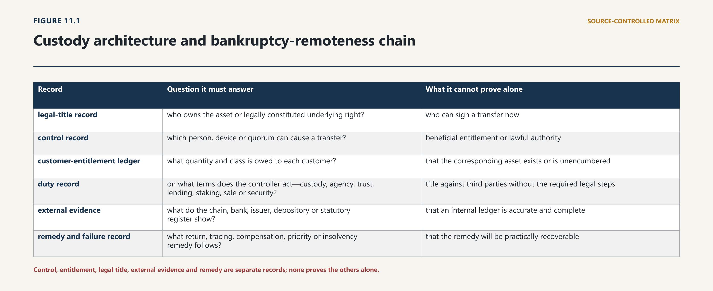

Chapter Eleven · Part 3
Chapter 11 — Property, Custody, Customer Assets, Insolvency and Market Conduct
11.1 Control Is Not Title
11.1.1 Operational control and legal ownership
11.1.2 Keys, accounts, intermediated holdings and agency
1
Digital-asset systems make control unusually visible. A person who can produce the required signature may move a token. A custodian may hold the private keys to thousands of customer positions. An exchange may maintain an internal balance for a customer while the corresponding assets sit in an omnibus wallet. None of those facts, without more, answers who owns the asset, what the asset legally is, whether the controller acts for another person, or who bears loss when control fails.
2
The distinction matters because a digital-asset arrangement can contain several legally different objects at once. There may be a protocol-native unit; a private key or signing credential; a contractual claim against an issuer or platform; a beneficial or customer entitlement recorded only in the platform ledger; and an underlying share, debt, commodity or land interest recorded elsewhere. The person controlling one object does not necessarily own the others. A stolen key can give effective transfer power without lawful authority. A custodian can control an omnibus wallet while owing every economic entitlement to customers. A customer can have an enforceable claim against a platform without having an individually identifiable on-chain asset. A token may be transferred while the register that legally constitutes the underlying right remains unchanged.
3
Pakistan’s Virtual Assets Act 2026 starts from the right premise. It defines “Customer Assets” as virtual assets and fiat currency belonging to a customer that a VASP holds, safeguards or otherwise has custody or control over on the customer’s behalf, excluding assets owned by the VASP. Its custody-service definition likewise focuses on safekeeping or administration of virtual assets or the keys or other means of access, while excluding mere software or hardware provision where the customer retains exclusive control. Section 24 then separates the customer’s asset from the licensee’s estate and imposes a fiduciary duty on the licensee.1 The Act therefore treats control as evidence of a safeguarding relationship, not as conclusive title.
4
Every regulated custody file should maintain a six-record chain:
| Record | Question it must answer | What it cannot prove alone |
|---|---|---|
| legal-title record | who owns the asset or legally constituted underlying right? | who can sign a transfer now |
| control record | which person, device or quorum can cause a transfer? | beneficial entitlement or lawful authority |
| customer-entitlement ledger | what quantity and class is owed to each customer? | that the corresponding asset exists or is unencumbered |
| duty record | on what terms does the controller act—custody, agency, trust, lending, staking, sale or security? | title against third parties without the required legal steps |
| external evidence | what do the chain, bank, issuer, depository or statutory register show? | that an internal ledger is accurate and complete |
| remedy and failure record | what return, tracing, compensation, priority or insolvency remedy follows? | that the remedy will be practically recoverable |
5
That chain should be tested at deposit, internal transfer, external transfer, use, reconciliation, withdrawal, seizure, death and insolvency. A wallet address is part of the evidence. It is not a title deed of universal application. The proposition “not your keys, not your coins” may describe operational dependency; it is not a complete rule of Pakistani property law.
6
The lifecycle test makes the distinction concrete. At deposit, the VASP must identify the sender, asset, chain, destination, confirmation rule and customer entitlement created; credit to the customer ledger should not precede the platform’s defined finality threshold without a controlled exposure record. At custody, the legal relationship, wallet class, signing authority and sub-custodian must remain linked to that entitlement. At use, every stake, loan, pledge, margin transfer or fee deduction must have an instruction and a legal basis capable of being retrieved later. At reconciliation, the external asset, internal liability and permitted encumbrance must agree. At withdrawal, the VASP must prove the customer’s authority, execute against the correct pool and close pending ledger items. At seizure or freezing, the order, competent authority, affected asset and continuing customer entitlement must remain distinguishable; freezing control does not transfer beneficial value to the State or VASP. At failure, the same records must allow an office-holder to exclude customer property, quantify each entitlement and return or transfer the pool without reconstructing the business from employee recollection.
7
This lifecycle also allocates institutional ownership. PVARA owns the licensed custodian’s safeguarding, conduct and supervisory file. A bank remains responsible for the designated fiat account under banking and payment law. SECP remains responsible where the asset or activity is a security or futures product. A court or insolvency office-holder determines contested title and distribution within its jurisdiction. Law-enforcement authorities may restrain or seize under lawful powers. The customer should not have to guess which institution holds the decisive record: the VASP’s account statement and complaint response should identify the responsible route for the issue presented.
11.2 Property Characterisation
11.2.1 Things in action, intangible property and statutory concepts
11.2.2 Transfer, tracing and enforceability
8
“Custody” is not one legal relationship. The technology and the contract must be examined together, and the classification must remain open until the asset, authority and return obligation are identified.
9
Self-custody. A customer who alone controls the signing credentials bears the immediate operational risk of loss, coercion and mistaken transfer. A wallet-software provider that cannot access or transfer the assets falls outside the Act’s scheduled custody-service definition on that fact pattern. That does not make the provider immune from contract, consumer, data, cybersecurity or misrepresentation law. Nor does exclusive key control settle title if the token was stolen, acquired without authority or represents a right constituted in another register.
10
Individually segregated hosted custody. The custodian controls a wallet dedicated to one customer. Individual wallet separation can make identification and return easier, but the governing relationship still requires a title and duty analysis. The customer may remain owner while the custodian acts as agent or fiduciary; the asset may be held on a valid trust; or the customer may have only a contractual claim, depending on the asset and legal steps actually taken. Wallet separation is powerful evidence. It is not a substitute for the legal relationship.
11
Omnibus custody. The custodian pools fungible assets for many customers and allocates interests through an internal ledger. This can reduce transaction costs and improve liquidity, but it makes the customer ledger legally and operationally decisive. The platform must prove the total asset balance, every customer liability, pending deposits and withdrawals, proprietary positions, authorised uses and encumbrances. If the pool is short, a court or final rule must know whether identified customers take first, whether the loss is shared rateably within the asset class, whether the custodian must cure the shortfall from its own assets, and how transaction costs are allocated. Neither the Act nor the public consultation draft presently supplies a complete enacted shortfall rule.
12
Sub-custody. A Pakistani VASP may use a bank, specialist wallet provider, foreign exchange, validator or other sub-custodian. Outsourcing changes the control chain; it should not erase the customer-facing duty. The primary VASP must identify the sub-custodian, location, governing law, wallet and account structure, rehypothecation rights, insolvency treatment, audit access, incident route and return mechanism. A contract saying that the sub-custodian is responsible does not by itself transfer the VASP’s statutory fiduciary duty or make foreign customer-asset protection effective in Pakistan.
13
Staking and protocol participation. Staking can mean mere technical delegation with the customer retaining the economic asset, transfer to a validator-controlled arrangement, discretionary investment management, or a loan or other title-transfer transaction. The Scheduled management category in the Act includes discretionary staking or staking within a broader mandate. The legal file must state who selects the validator, who controls withdrawal credentials, whether assets are bonded or locked, who receives rewards, who bears slashing and protocol penalties, whether the validator may redelegate, and what happens on fork, failure or insolvency.2 Calling the service “earn” or “staking” answers none of those questions.
14
Lending, margin and title transfer. Section 24(4) permits rehypothecation, lending, pledge or other encumbrance only with the customer’s explicit, informed and revocable written consent. That is a conduct condition, not a declaration that every permitted arrangement leaves title unchanged. A true loan or title-transfer collateral arrangement may replace the customer’s proprietary position with a repayment claim. A pledge or security interest ordinarily presupposes that the grantor has rights in the collateral and that attachment and perfection requirements are met. The agreement must state the legal mechanism rather than using one consent clause for legally different transactions.
15
The older Contract Act 1872 offers useful but incomplete analogies. Bailment involves delivery of “goods” for a purpose with a return or disposition obligation; an agent must follow the principal’s directions, exercise skill and diligence, account for benefits and pay over sums received, subject to defined rights and liens.3 Those rules can illuminate a hosted-custody relationship, but the treatise does not assume that every virtual asset is “goods” or that every custody relationship is bailment. Section 24’s express statutory fiduciary duty is the firmer starting point. Contract and agency law then supply additional consequences where the facts fit.
16
The operational custody agreement should therefore disclose, for every service: the legal character of the customer’s right; the controller and signing quorum; whether assets are individual or omnibus; every sub-custodian; permitted and prohibited uses; the treatment of forks, airdrops, rewards and slashing; withdrawal conditions; evidence and reconciliation; governing law; succession process; failure and shortfall treatment; and the complaint and compensation route. Disclosure does not cure an unlawful use, defective title transfer or unperfected security. It makes the legal and operational bargain capable of being tested.
11.3 Custody Models and Legal Relationships
11.3.1 Hosted, omnibus, segregated and self-custody models
11.3.2 Trust, bailment, agency, contract and control
17
Pakistan does not need a slogan that every token is property. It needs a classification that identifies the object and the law governing its transfer. “Virtual asset” is a regulatory perimeter; it can include economically and legally different things.
18
The Sale of Goods Act 1930 defines goods broadly as every kind of movable property other than actionable claims and money, including shares and other identified categories. For specific or ascertained goods, property passes when the parties intend it to pass; a seller generally cannot give better title than the seller has, subject to statutory exceptions.4 A protocol-native token may plausibly be argued to fall within movable property, but the Act does not mention digital tokens, and some tokens are money-like, actionable claims, securities or records of another right. It would be unsound to force every token into “goods” merely to obtain familiar transfer rules.
19
The following legal objects must be separated:
20
Protocol-native unit. The ledger may constitute the unit and record its current technical state. The unresolved private-law questions include whether the unit is movable property, what event completes a legally effective transfer, and what remedies apply to an unauthorised transfer.
21
Issuer or platform claim. The token may evidence a contractual debt, redemption right or service entitlement. Assignment, notice, defences and the issuer’s terms may matter independently of the on-chain movement.
22
Security or company interest. Chapter 10 established that the Companies Act, securities law and central or company register may constitute the right. A token is not an alternative share register merely because it mirrors a share.
23
Immovable property or registered asset. A sale of qualifying immovable property requires the legally prescribed instrument and registration; a contract for sale does not by itself create an interest or charge. A required but unregistered instrument does not create or transfer the relevant right. The Transfer of Property Act also requires a signed written instrument to transfer an actionable claim.5 A land token can therefore be a record, access device or contractual claim without transferring the land.
24
Key or credential. A key is a means of exercising control. Transfer of the key may transfer practical capacity, but not necessarily the legal asset or the authority to use it.
25
Internal account entitlement. An exchange database entry may record the VASP’s obligation to the customer. If assets are omnibus, the entitlement can be critical even though no individual on-chain unit is allocated.
26
This object-by-object method also governs mistaken and unauthorised transfers. Protocol finality may make technical reversal impossible. That does not necessarily extinguish an off-chain claim against a thief, dishonest agent, recipient with notice, negligent custodian or other legally responsible person. Conversely, a contractual promise by a platform to “reverse” a transaction cannot alter an immutable chain unless the platform controls a compensating transfer or the protocol provides a lawful reversal mechanism. The remedy may be restitution, tracing, damages, account correction, injunction, freezing, seizure or compensation; its availability depends on the legal object, defendant, evidence and forum.
27
Succession exposes the same distinction. The Succession Act 1925 addresses representative title, probate, letters of administration, debts and specified securities. Its Part X definition of “security” includes government securities, company stock, debentures and shares, local-authority securities and other provincially notified securities; it does not expressly include every virtual asset. Sections 211–216 also contain personal-law qualifications, including stated exceptions concerning Muslim estates.6 A VASP should not insist that one document is universally sufficient. It should maintain a published representative-title process that accepts the legally appropriate probate, letters, succession certificate, court order or other competent evidence; freezes outgoing activity after verified notice; preserves the asset and audit trail; and transfers it to the person lawfully entitled. Self-custodied value may legally pass on death yet remain inaccessible if no usable key, recovery route or authorised mechanism survives.
28
The national private-law objective should be functional certainty, not metaphysical uniformity. Primary legislation should recognise virtual assets as capable of constituting movable intangible property or a proprietary interest where their design and governing law support that conclusion, while preserving the law of underlying securities, money, claims and registered assets. It should state the effect of an authorised ledger transfer, the remedies for unauthorised transfers, the treatment of good-faith recipients and intermediaries, and the connecting law for cross-border holdings. Until then, product terms should identify the precise object transferred and avoid promising that a wallet entry proves universal title.
11.4 Segregation, Reconciliation and Recordkeeping
11.4.1 On-chain and off-chain books
11.4.2 Customer entitlements, shortfalls and proof
29
Section 24 contains three protections that must be read together. The licensee must hold customer assets in segregated accounts; customer assets do not form part of the licensee’s estate in insolvency or liquidation notwithstanding contrary law; and the licensee owes a fiduciary duty when dealing with them. The fourth protection restricts rehypothecation, lending, pledge and encumbrance without explicit, informed and revocable written consent.7 The direct estate exclusion is the most important proprietary consequence in the present federal statute. It should not be diluted into a mere accounting policy.

30
But “segregated” is not self-executing. Four layers must agree:
| Layer | Minimum evidence | Failure if absent |
|---|---|---|
| banking/wallet structure | designated client bank account; client wallet or clearly tagged omnibus wallet | customer and house assets cannot be separated reliably |
| books and records | per-customer, per-asset liabilities; proprietary positions; pending items; uses and encumbrances | asset pool exists but beneficiaries and quantities are uncertain |
| legal relationship | statute, valid trust or other proprietary/fiduciary basis; clear terms | segregation may remain administrative only |
| failure procedure | return, transfer, shortfall, cost, dispute and court/liquidator protocol | assets are “outside the estate” but practically frozen or distributed unpredictably |
31
The Trusts Act 1882 describes a trust as an obligation annexed to ownership, arising from confidence accepted or declared by the owner for another’s benefit. A movable-property trust requires the prescribed declaration or transfer of ownership, and creation requires reasonable certainty as to intention, purpose, beneficiary and trust property. The Act gives beneficiaries inspection, execution and proprietary-following remedies, subject to limitations and good-faith transferee protection.8 Those are relevant consequences where that Act remains territorially applicable and a valid trust has actually been constituted. They cannot be assumed from the word “segregated”.
32
The territorial position now matters. The Islamabad Capital Territory Trust Act 2020 repeals the 1882 Act within ICT. It defines author and beneficiary as natural persons, provides that no legal person may be a beneficiary and states that every natural person capable of holding property—and not a legal person—may be a trustee. It also requires trust registration and specified creation steps.9 A licensed corporate VASP in Islamabad therefore cannot simply declare itself an ordinary trustee under that verified text for a customer class including companies. Other provincial regimes are not identical: Sindh enacted its Trusts Act in 2020 and amended it in 2021 by substituting “any” for “the natural” in the author and beneficiary definitions, removing natural-person restrictions in trustee provisions and adding specialised trusts.10 This variation defeats any national customer-asset model that silently relies on one territorial trust statute.
33
The correct solution is a dedicated federal customer-asset regime within Parliament’s valid field, coordinated with provincial private law rather than pretending the conflict does not exist. It should expressly permit a licensed corporate custodian or independent corporate trustee; allow natural and legal-person customers and a changing class of omnibus beneficiaries; identify how title to fungible virtual assets, fiat and entitlements is vested; provide that additions, substitutions, forks and proceeds enter the pool; preserve the section 24 estate exclusion; and specify tracing, return and shortfall rules. If constitutional competence requires provincial adoption or coordinated legislation for particular private-law effects, the implementation programme must say so and obtain it.
34
The notified Pakistan Virtual Asset Services Regulations, 2026 now provide the controlling operational requirements for client-money accounts, reconciliation, treatment of client virtual assets, wallet records, shortfall investigation, insolvency records and proof-of-reserves.207 Those requirements must be read from the final text and applied with the Act’s section 24 exclusion. A regulatory label concerning beneficial ownership cannot, by itself, displace the primary law governing property, trusts, insolvency and the legal relationship between a provider and its customer.
35
Proof-of-reserves must never replace proof-of-liabilities. An address signature or Merkle-tree snapshot can show control over specified assets at a time. It may omit borrowed assets, encumbrances, negative balances, off-chain customers, pending withdrawals, related-party exposures or duplicated claims. Section 27 correctly requires cryptographic proof-of-reserves reconciled against liabilities to customers, and the draft adds independent validation and states that proof-of-reserves does not displace segregation and safeguarding.11 The required assurance is therefore:
36
Reconciliation should be continuous enough for the business, daily where customer movements occur daily, independently reviewed and exception-driven. A material break must trigger containment, root-cause analysis, regulator notice, customer-impact assessment and a funded cure. A polished public reserve ratio without a complete liability perimeter is marketing, not solvency evidence.
11.5 Insolvency and Priority
11.5.1 Estate inclusion and customer claims
11.5.2 Return, set-off, secured claims and shortfall allocation
37
Section 24(2) answers the threshold question: customer assets held by a licensee do not enter its estate on insolvency or liquidation. It does not answer every downstream question. The liquidator still needs to identify which assets are customer assets, distinguish proprietary and customer positions, resolve competing claims, value a shortfall, deal with fees and network costs, and return or transfer assets. A customer who cannot prove the entitlement or link it to the controlled pool may still face delay or be forced to prove a personal claim.
38
The corporate route must also be stated accurately. Section 23(2) of the Virtual Assets Act permits PVARA, after licence revocation, to notify SECP to initiate winding-up or dissolution under the Companies Act 2017. It is not itself a winding-up order. Companies Act section 301(k) permits court winding-up where the company’s sole business is a licensed activity and it ceases to operate because a licence granted by the Commission or another licensing authority is revoked. Section 304’s proviso removes the usual investigation requirement for a Commission petition in that same sole-business circumstance. Winding-up by the Court is nevertheless commenced by petition, and the Court retains the powers to dismiss, adjourn, make an interim order or order winding-up.12 A mixed-business company does not fit section 301(k) merely because one PVARA licence is revoked, though other section 301 grounds may apply.
39
That route corrects two opposite errors. Licence revocation is not legally inert; the Companies Act supplies a targeted petition pathway. But revocation is not automatic liquidation, and liquidation may be the wrong first customer-protection response where a controlled transfer or solvent wind-down can return value faster. Final rules should require a pre-funded wind-down plan, customer-asset transfer capability and early-warning triggers before capital and records deteriorate.
40
Once winding-up begins, the court and official liquidator collect and apply company assets, while debts and claims are proved and company property is distributed under the statutory ranking. The statutory machinery necessarily encounters assets that the company holds or appears entitled to hold.13 Section 24’s exclusion should prevent genuine customer assets from becoming the distributable company estate. Its effectiveness depends on the records: a house wallet labelled as customer property, a customer pool reconciled to liabilities and a sub-custodian acknowledgment are materially stronger than a spreadsheet created after failure.
41
A customer-asset return protocol should operate before the ordinary creditor dividend. The office-holder should first secure keys, bank mandates, ledgers, transaction logs and sub-custody access; suspend non-essential asset movement; and reconcile assets by class. It should publish a claims cut-off only after customers can inspect the platform’s recorded balances and dispute a discrepancy. Uncontested individually segregated assets should be returned or transferred promptly. Omnibus pools should be matched to aggregate entitlements, with disputed portions reserved rather than freezing the whole pool where separation is possible. Network, conversion and administration costs should be transparent, necessary and allocated under a statutory rule; they should not become an uncapped first charge that consumes small customer balances. Any sale instead of return in kind should require a recorded reason, valuation method and conflict control.
42
Where systems can be preserved, transfer to another licensed custodian may protect value better than thousands of on-chain returns. That option requires customer notice, preservation of asset class and quantity, no enlargement of withdrawal restrictions, secure transfer of identity and ledger data, and an opt-out or direct-return route where practicable. The receiving custodian must reconcile the transferred pool before accepting liability. Neither PVARA nor an office-holder should treat a bulk transfer as complete merely because keys moved; customer liabilities and complaints must transfer with the assets.
43
Priority requires four separate categories:
44
Identifiable customer assets outside the estate. Return in kind or transfer should be the default, subject to necessary verification and proportionate costs.
45
Customer pool with complete aggregate assets but omnibus entitlements. The ledger should determine each customer’s quantity, with an auditable dispute process.
46
Short customer pool. Primary law or final rules should specify whether the custodian must cure the deficit, whether the remaining pool is shared rateably by asset class, whether wrongdoer-attributable losses can be separated, and whether compensation covers the residual.
47
Personal customer claim. Where no proprietary asset or pool entitlement can be established, the customer may prove as a creditor and rank under insolvency law, subject to any statutory priority.
48
Security interests add a further layer. The Financial Institutions (Secured Transactions) Act 2016, as amended, is not a universal digital-collateral code; it concerns secured obligations owed by a customer to a financial institution and uses Recovery Ordinance terminology. Its movable-property definition is broad and includes intangibles, but does not name virtual assets. Attachment requires agreement, value and debtor rights in or power to transfer rights in the collateral. The Act then addresses perfection, registration, priority and insolvency, and gives a perfected security interest statutory precedence subject to its terms.14 A customer’s consent under Virtual Assets Act section 24(4) does not by itself satisfy those elements.
49
The governing distinctions are these:
50
a VASP cannot grant effective security over customer property merely because it controls the key;
51
a customer may grant security over an asset or entitlement only if the customer has the required rights and the governing law recognises and perfects the interest;
52
a lending or title-transfer transaction may leave the customer with a repayment claim rather than a retained asset, which must be made unmistakable before consent;
53
a financier’s charge over the VASP’s own assets should expressly exclude customer assets and be confirmed by wallet, account and register controls; and
54
competing claims between section 24, secured-transactions law, a foreign sub-custodian and a customer require an express connecting and priority rule, not a broad warranty.
55
The Provincial Insolvency Act 1920 does not supply the corporate VASP route: section 8 prohibits insolvency petitions against corporations, associations and registered companies. It remains relevant to individuals and unincorporated actors, where adjudication vests property in the court or receiver, preserves secured-creditor rights and provides proof and distribution rules.15 The distinction is important for customers, controllers and service providers outside the licensed-company perimeter; it must not be cited as the governing liquidation statute for a licensed corporate VASP.
56
Cross-border custody magnifies every uncertainty. A foreign sub-custodian may hold the asset under a law that recognises a different trust, account or insolvency result. The Pakistani VASP should be required to obtain a reasoned legal opinion on title, segregation, set-off, lien, insolvency remoteness and return; maintain direct asset and liability data; prohibit unauthorised onward custody; and provide PVARA and an insolvency office-holder with access. “Regulated overseas” is not an insolvency analysis. The customer-facing VASP must remain responsible for choosing and monitoring the chain.
11.6 Operational Custody Duties
11.6.1 Key management, cybersecurity and transaction controls
11.6.2 Delegation, sub-custody and outsourcing
57
Section 26 requires secure custody against unauthorised access, loss or misuse and operational resilience through disaster recovery and business continuity. Section 27 adds proof-of-reserves and annual audit, including verification of segregation.16 These are sound statutory anchors. The final control framework must connect them to title and customer liabilities.
58
A custody system should be approved and tested across the following control domains:
| Domain | Required control evidence |
|---|---|
| key creation | documented ceremony; approved entropy and devices; dual control; no single-person plaintext access |
| key storage | hot/warm/cold allocation; multi-signature or threshold design; geographic and organisational separation |
| transaction authority | customer authentication; address controls; velocity and value limits; human review for exceptions |
| recovery | tested backup and reconstruction; quorum succession; device loss and disaster scenarios |
| privileged access | least privilege; session logging; maker-checker; rapid revocation; insider-risk monitoring |
| chain operations | confirmation thresholds; replay and reorganisation controls; fork and airdrop decision process |
| reconciliation | customer ledger, on-chain balance, bank balance, pending items and encumbrance matching |
| outsourcing | due diligence, location and governing law; audit and access rights; exit and data portability |
| incident response | containment; evidence preservation; regulator/customer notice; restitution and lessons learned |
| wind-down | asset inventory; transfer files; funded execution; office-holder access; customer communication |
59
No control should depend on a person whose death, disappearance or misconduct can immobilise the pool. Multi-party authority should separate operational initiation, approval, recovery and audit. Recovery material must be protected against both loss and collusion. Penetration testing cannot substitute for transaction-authority testing, and a successful backup restoration cannot prove that the restored keys correspond to the current customer ledger.
60
The return obligation needs equal precision. Withdrawal terms should state validation and security holds, network fees, supported chains, destination screening, service cut-offs and escalation. A VASP should not use vague “security review” language for indefinite retention. Where a withdrawal is paused, the customer should receive the lawful basis, the information required, a review route and an expected decision point, subject to legitimate confidentiality and financial-crime constraints.
61
Forks, airdrops and staking returns are customer-asset questions, not discretionary windfalls for the controller. The draft regulations propose that rewards, proceeds and benefits attributable to client virtual assets accrue to the client unless the client agreement fairly provides otherwise.17 Final rules should require an advance policy addressing technical support, materiality, costs, conflicts and distribution. A custodian need not support every fork, but it should not appropriate economically material value created from customer assets without a lawful and clearly agreed basis.
62
Death, incapacity and loss of authentication require a controlled change of authority rather than disclosure of a private key. The VASP should preserve the account, verify representative title, screen disputes, revoke deceased-user credentials, create a recorded transfer approval and deliver assets or a new controlled account to the lawful representative. The process must recognise personal-law and territorial differences and avoid adjudicating inheritance shares that belong to the competent legal forum.
11.7 Market Conduct and Conflicts
11.7.1 Execution, disclosure and fair dealing
11.7.2 Principal trading, listing, incentives and related parties
63
Customer-asset protection fails if custody is sound but execution and platform incentives are opaque. Sections 41–45 of the Virtual Assets Act require fair dealing and client protection, issuer disclosures, marketing controls, conflict management and internal complaints. Section 44 says a licensee must identify, manage and disclose conflicts and must not place its own interests above the customer’s.18 Disclosure is therefore one control, not a permission to exploit the conflict.
64
Every trading or brokerage VASP should publish an execution policy explaining venue selection, price and liquidity sources, spread and fee treatment, order types, routing, failed orders, partial fills, slippage, latency, settlement and the circumstances in which it acts as principal. The legal standard should be calibrated to the service. A platform promising agency execution should seek the best reasonably available customer outcome under a defined methodology. A principal dealer must state that it is the counterparty and disclose the method and material conflicts in its quote. Neither model permits misuse of customer orders or hidden related-party preference.
65
The policy needs measurable review. The VASP should retain the received time, decision time, routed venue, quoted and executed price, available depth, fee, spread, slippage, rejected venues and reason for any manual intervention. Periodic testing should compare customer outcomes across venue, asset, order size and customer type and should isolate profits earned by the house or a related party. A generic statement that the platform considers “price, cost and speed” cannot be audited. Where a service does not promise best execution, fair dealing still prohibits a hidden mark-up, false price source or execution designed to benefit the platform at the customer’s expense.
66
Listing creates a concentrated conflict. The platform may receive listing fees, hold the asset, invest in the issuer, provide market making, lend to related parties or possess non-public technical information. An admission decision should therefore record legal classification, issuer and controller, protocol and cybersecurity risk, supply and concentration, liquidity, manipulation risk, conflicts, custody support, surveillance capability and exit conditions. Commercial sponsorship should be separated from the approval function. The customer must be told when the VASP or a related party has a material financial interest.
67
Proprietary dealing requires information barriers and inventory discipline. Customer orders, liquidation thresholds and withdrawal flows can reveal future price pressure. A VASP should not trade ahead of a customer, route a customer into house inventory on inferior terms, or use non-public listing and incident information. Separate books, pre-trade controls, restricted lists, post-trade surveillance and board-approved limits should govern house activity. Related-party trades should carry heightened approval and pricing evidence.
68
The notified Pakistan Virtual Asset Services Regulations, 2026 and Pakistan Virtual Asset Activity-Specific Regulations, 2026 now control conflicts of interest, inside information, personal-account dealing, proprietary activity and asset-admission standards within their lawful scope.216 The operative provisions must be cited from the final text and read with applicable retention, independent-testing, customer-remedy, Securities Act and Futures Market Act requirements where a token, service or product crosses those legal perimeters.
69
Staking, lending and “earn” products combine custody, investment, liquidity and conflict risks. The VASP may select a related validator, retain part of the reward, use assets for its own funding or socialise losses. The customer file should identify gross protocol return, every deduction, lock-up, slashing allocation, counterparty, collateral, title consequence and withdrawal waterfall. A high yield is not a risk disclosure. It is a reason to prove the transaction generating the yield.
11.8 Manipulation, Insider Conduct and Surveillance
11.8.1 Market abuse in fragmented venues
11.8.2 Evidence, monitoring and enforcement
70
Section 52 of the Virtual Assets Act prohibits market manipulation or abuse in relation to virtual assets and prohibits trading, recommending or inducing trading based on inside information and unlawful disclosure of that information. The Act defines manipulation by false or misleading signals, artificial prices and deceptive interference with supply and demand; inside information includes non-public price-sensitive information such as client orders and trading intentions.19
71
This creates a broad primary prohibition, but enforcement needs a conduct taxonomy and evidence system. Final Regulations should cover wash trading; matched or collusive orders; spoofing and layering; marking open, close or reference prices; pump-and-dump coordination; false liquidity; misleading token-supply or reserve statements; manipulation across spot and derivatives venues; misuse of liquidation engines; front-running; and abusive conduct through bots, validators, or related accounts. The taxonomy should be illustrative rather than exhaustive so that a new mechanism cannot escape solely because it was not named.
72
Surveillance must join data that criminals and conflicted insiders try to separate:
73
Alerts require trained review, escalation, evidence preservation, suspicious-activity referral where applicable, regulatory reporting and customer-remedy assessment. A platform should retain the model version and parameters that generated an alert; otherwise automated surveillance becomes an unreviewable conclusion.
74
Overlap must be cumulative and controlled. The Securities Act’s insider-trading provisions apply to listed securities and its market-abuse provisions address false trading, rigging, manipulation and deceptive inducement. It requires securities exchanges to use surveillance and complaint procedures and separately protects customer assets. The Futures Market Act applies insider-trading and market-conduct rules to futures contracts and their underlying securities, commodities or financial instruments.20 Where a token is also a listed security or a virtual-asset derivative is a futures contract, PVARA and SECP may both possess relevant evidence and powers. A joint protocol should allocate lead investigation, preserve each statutory offence, prevent inconsistent freezing or disclosure orders and avoid duplicate punishment for the same legal wrong while permitting distinct contraventions to be pursued.
75
Market integrity also depends on remedy. The Act permits administrative sanctions, court-ordered restitution and disgorgement, temporary service suspension and asset freezing in serious cases.21 The case file should therefore identify affected customers and measurable loss, not merely prove that an artificial price existed. Disgorgement removes gain; it does not necessarily restore every customer. Restitution, compensation and civil rights must be coordinated.
11.9 Consumer Protection and Redress
11.9.1 Risk disclosure, complaints and compensation
11.9.2 Misrepresentation, negligence and statutory remedies
76
The Virtual Assets Act’s customer-protection architecture is broader than disclosure. Section 41 requires fair dealing and protection of client interests; sections 42–44 regulate issuer information, marketing and conflicts; section 45 requires internal complaint procedures and permits an independent scheme for claims below a prescribed threshold; section 29 permits a compensation mechanism.22 These powers should become a complete redress pathway, not a website form.
77
The internal process should provide a single complaint identifier, acknowledgement, issue classification, preservation of records, a responsible decision-maker independent of the original act, a reasoned final response, specified time limits and notice of external routes. Urgent complaints involving unauthorised transfers, account compromise, vulnerability, deceased customers or imminent dissipation need immediate containment. Aggregate complaint data should feed supervision, listing and product review.
78
Complaint classification should drive remedy. A balance or reconciliation complaint requires ledger and wallet evidence. An execution complaint requires order, quote, routing and conflict data. An unauthorised-transfer complaint requires authentication, device, address and signing logs. A title or succession dispute requires representative-title evidence and preservation rather than a customer-service judgment on inheritance. A manipulation complaint requires cross-account and market data. The final response should state the facts accepted, rule applied, evidence relied on, relief granted or refused and review route. Confidentiality may justify redaction; it should not justify an unexplained conclusion.
79
Redress also requires enforceability. An internal decision granting repayment should specify amount, asset, method and date. An independent scheme should be able to require records, consolidate related complaints and issue an outcome that the licensee must implement within the lawful limit of the scheme. PVARA should track unpaid outcomes as a prudential and fitness issue. Where criminal investigation or asset freezing prevents immediate payment, the customer should receive a lawful status explanation and periodic review rather than having the complaint administratively closed.
80
Section 45(2)’s “notwithstanding” clause authorises PVARA to establish or recognise an independent low-value dispute scheme. It should not be read as extinguishing constitutional review, civil claims, criminal process or consumer rights under other applicable law. Section 5 makes the Act cumulative except to its stated extent. Final Regulations should expressly preserve other remedies, prevent double recovery and provide limitation-suspension or clear timing rules while an internal or independent process runs.
81
Consumer law adds a territorial layer. The Islamabad Consumers Protection Act 1995 defines services broadly, prohibits unfair trade practices and false or misleading claims about quality, approval, standards, usefulness and price, permits complaints and authorises compensation for loss. It also provides an appeal to the High Court.23 Provincial consumer statutes and forums require their own current territorial analysis. PVARA should publish a federal–provincial referral map instead of implying that a PVARA complaint is the only door.
82
The compensation mechanism needs primary design choices: eligible claimant; covered service and event; maximum per customer; aggregate cap; funding levy; governance; claim standard; exclusions; subrogation; relationship to insurance, restitution and insolvency; and public reporting. It should not insure market losses or create a government guarantee. A defensible scope would focus on defined custody shortfalls or losses caused by licensee failure, dishonesty or specified operational events after customer assets and insurance are exhausted, subject to proof and limits.
83
Customers also need collective information. PVARA should publish anonymised complaint outcomes, common failure types, processing times, unpaid awards and compensation-fund data. Repeated “individual” complaints may show a system defect. Supervisory action should not wait for each customer to reconstruct the same custody chain separately.
11.10 Failure and Loss-Allocation Scenarios
11.10.1 Exchange, custodian, stablecoin and bridge failure
11.10.2 Who bears loss under current and proposed law
84
Loss allocation should follow the failed duty, not the technology label.
| Scenario | Immediate operational result | Decisive legal and evidential question | Primary route; unresolved point |
|---|---|---|---|
| customer loses self-custody key | asset becomes inaccessible | did any provider retain recovery/control or make a false recovery promise? | customer bears control loss absent another breach; legal title may survive without practical access |
| customer sends to wrong address | protocol transfer completes | was the instruction authorised, was the interface negligent, can recipient be identified? | possible restitution/damages; no assumed chain reversal |
| custodian hot-wallet hack | pooled assets leave custodian control | compliance with s 26, causation, insurance, traceability and pool records | custodian duty, restitution/compensation; final shortfall allocation required |
| employee or controller theft | authorised credential misused | authority logs, segregation of duties, related accounts and recipient notice | criminal/civil tracing, licensee liability and section 24 pool protection |
| omnibus ledger exceeds on-chain assets | customers cannot all withdraw | complete liability ledger, timing items, proprietary use and encumbrances | licensee cures deficit; enacted rateable shortfall rule still needed |
| unauthorised lending or pledge | third party asserts rights | customer ownership, VASP authority, secured party notice and perfection | section 24 breach; VASP control alone cannot grant owner’s rights |
| consented lending/title transfer | borrower fails | did title pass, what repayment/collateral right exists, was consent truly revocable before use? | customer may be creditor, not owner; terms and prudential perimeter decisive |
| staking slashing or validator failure | principal/reward reduced or locked | who selected validator, who bore slashing by agreement, was conflict disclosed? | allocation under lawful mandate; no silent socialisation |
| fork, airdrop or protocol migration | new or changed asset arises | attribution, technical support, cost, materiality and advance policy | customer attribution presumptive where derived from customer asset; operational limits must be fair |
| tokenised asset issuer fails | token remains but underlying value fails | holder’s direct right, reserve ownership, register and priority | Chapter 10 perimeter plus sections 31–32; token possession alone does not establish reserve title |
| VASP licence revoked | service stops | sole-business condition, wind-down readiness and customer-transfer plan | Companies Act petition may follow; revocation is not liquidation order |
| VASP insolvency | access frozen by office-holder | identification under s 24, wallet/ledger reconciliation and sub-custody | customer assets outside estate; procedure, costs and shortfall rules need completion |
| foreign sub-custodian fails | Pakistani VASP loses upstream access | foreign title, trust, lien, set-off, law and recognition | Pakistani VASP remains customer-facing duty bearer; cross-border recovery uncertain |
| customer dies or loses capacity | authority to instruct ends or is disputed | representative title, personal-law qualification, supported asset and secure recovery | freeze/preserve/transfer under valid evidence; no universal succession-certificate assumption |
85
The matrix shows why disclosure alone is inadequate. A warning that “virtual assets are risky” does not identify who took custody, whether the customer retained title, whether the asset was pledged, which evidence proves the liability or which fund pays a shortfall. Each service should produce its own pre-agreed loss-allocation schedule, constrained by non-excludable statutory duties.
Corrective Customer-Asset Code
86
Pakistan already has the essential public-law commitment: customer assets are separate, outside the VASP estate and subject to a fiduciary duty. The next step is to make that commitment executable across property, trust, secured transactions, insolvency, operations, market conduct and redress.
87
The institutional response should contain the following instruments.
88
The package should be drafted against three failure tests. First, a customer with a correct account balance but no identifiable supporting pool must still have a funded shortfall and compensation route. Second, a liquidator encountering a mixed omnibus wallet must be able to determine, without policy invention, what is excluded, how customers prove quantities, who pays necessary return costs and how a deficit is shared. Third, a secured creditor or foreign sub-custodian must be unable to convert the VASP’s technical control into a superior right over customer property through boilerplate. If the combined instruments cannot answer those cases, the protective language remains incomplete.
Primary amendment: Customer Assets and Digital Property
89
Parliament should enact a dedicated Part that:
90
recognises a virtual asset as capable of being movable intangible property or embodying a proprietary interest, without displacing the law constituting money, securities, actionable claims, intellectual property or registered assets;
91
separates the token, key, customer entitlement and underlying right and states that technical control is not conclusive title;
92
creates a statutory customer-asset holding relationship available to corporate custodians and natural or legal-person customers, including changing omnibus classes, proceeds, substitutions, forks and attributable benefits;
93
preserves the section 24 estate exclusion and prohibits set-off, lien, execution and security over customer assets for the VASP’s own debts, subject to a customer’s validly created transaction;
94
states the effect of authorised and unauthorised ledger transfers, available proprietary and personal remedies, and treatment of good-faith recipients and intermediaries;
95
supplies connecting rules for the location and governing law of intermediated virtual assets, customer entitlements and security interests; and
96
empowers coordinated federal–provincial implementation where trust, property, consumer or succession competence requires it.
Final PVARA Regulations: Safeguarding and Conduct
97
The notified Regulations should be implemented and, where necessary, lawfully supplemented so that they:
98
define individual, omnibus, sub-custody, staking, lending, collateral and title-transfer models;
99
require client bank accounts, tagged wallets, per-asset customer ledgers, daily or risk-matched reconciliation and independent assurance;
100
make proof-of-reserves cover complete customer liabilities, encumbrances, pending items and proprietary positions;
101
prohibit customer-asset use unless the exact legal transaction, counterparty, title consequence, return, risk, revocation point and perfected security are documented;
102
require the VASP to cure reconciliation deficits promptly and prescribe rateable, asset-class shortfall rules if cure fails;
103
regulate sub-custodians, foreign legal opinions, onward custody, audit access, data portability and exit;
104
prescribe key governance, transaction authority, recovery, forks, airdrops, staking, incidents, succession and incapacity procedures;
105
regulate execution, listing, principal trading, related parties, personal-account dealing, fees, inducements and customer-order information;
106
specify market-abuse behaviours, cross-venue surveillance data, insider lists, case management and PVARA–SECP referrals;
107
establish reasoned complaint deadlines, an independent low-value scheme, preservation of other remedies and a defined compensation mechanism; and
108
require pre-funded wind-down, customer transfer, office-holder access and public failure communication.
Companies Act and secured-transactions bridge
109
The Companies Act route should be amended or supplemented so that PVARA can seek protective administration, transfer or winding-up for a licensed business without depending exclusively on the “sole business” condition, while preserving court control and due process. The order should distinguish customer assets at the outset and authorise a rapid return or transfer protocol. Secured-transactions and company-charge forms should require an express customer-asset exclusion and a virtual-asset collateral description capable of identifying the asset, entitlement, wallet or account and perfection method.
Institutional execution
110
PVARA should maintain a customer-asset supervisory team with custody, accounting, insolvency, market-surveillance and forensic capability. It should receive standardised asset/liability data, material reconciliation breaks, sub-custody exposures, proprietary positions, customer complaints and wind-down readiness. SECP, SBP, provincial consumer authorities, courts and law-enforcement bodies need a signed evidence and referral protocol. A regime that recognises the right but cannot produce the wallet, ledger, liability, office-holder or remedy at failure remains incomplete.
111
The chapter’s determinations are therefore precise. Control is not title. Segregation must produce an insolvency consequence. Proof-of-reserves must include liabilities. Consent is not perfection. Disclosure is not redress. The Virtual Assets Act supplies a credible statutory foundation, especially section 24. Its present weakness is not the absence of protective language; it is the missing private-law and procedural bridge that turns that language into recoverable customer value.
Chapter 11 Conclusion and Standalone Contribution
112
Customer protection begins by refusing to equate technical access with legal ownership. Keys, omnibus wallets and platform balances show different forms of control; the customer's proprietary or contractual interest depends on the custody agreement, segregation, records, applicable property law and the treatment of the assets on insolvency.
113
A defensible custody regime therefore joins legal characterisation to operational proof. Reconciliation, withdrawal controls, reserve verification, conflicts management, incident response, complaint handling and wind-down must all be capable of examination. When loss occurs, allocation should follow proved control, duty, causation and priority rather than the platform's description of the account.
114
Independent-use note. This paper is Chapter 11 of Code, Law, and Capital: Digital Assets, Legal Authority and Pakistan's Regulatory Order by Khurram Chughtai. It states the law and evidence to 21 August 2026 and should be cited with its chapter title and version.
Chapter 11 Selected Authorities and Notes
Footnotes
- ↑ Virtual Assets Act 2026 (Act No XIII of 2026) (‘VAA’), s 3 definitions of “Customer Assets” and “Virtual Asset Service Provider”, s 24 and sch I, custody service <https://na.gov.pk/uploads/documents/69aae92ebf61c_955.pdf> accessed 15 August 2026.
- ↑ VAA (n 1), sch I, virtual-asset management service; s 24(4). The chapter does not infer that every non-discretionary delegation is management or that every staking arrangement transfers title.
- ↑ Contract Act 1872, ss 148–163 and 182–225, especially ss 148–149, 151–161 and 211–221 <https://pakistancode.gov.pk/pdffiles/administrator8332a6df32386960ac7d81a5cf7aade2.pdf> accessed 15 August 2026.
- ↑ Sale of Goods Act 1930, ss 2(7), 18–26 and 27–30 <https://pakistancode.gov.pk/pdffiles/administrator03eadfb5474bfa7c9e45ab4558d5a926.pdf> accessed 15 August 2026. The possible treatment of a particular token as “goods” is an interpretive question, not stated as settled law.
- ↑ Transfer of Property Act 1882, ss 54 and 130 <https://pakistancode.gov.pk/pdffiles/administrator77923ce792b475e339e1f46ba0442da3.pdf>; Registration Act 1908, ss 17 and 49 <https://pakistancode.gov.pk/pdffiles/administrator0f29bc9f1e3dfed37c0034eed1e29d53.pdf> accessed 15 August 2026.
- ↑ Succession Act 1925, ss 211–217, 317–319, 368–375 and 381 <https://pakistancode.gov.pk/pdffiles/administrator4a6efe2b68e892d437aea98367cf6687.pdf> accessed 15 August 2026. The treatise does not state inheritance shares or treat Part X as exhaustive of representative title.
- ↑ VAA (n 1), s 24(1)–(4).
- ↑ Trusts Act 1882, ss 3, 5–6, 11–20, 31–32, 55–67 and 88–96 <https://pakistancode.gov.pk/pdffiles/administrator097759e0f2a16527881669c6e1435919.pdf> accessed 15 August 2026. The Pakistan Code consolidation notes repeal in ICT by the 2020 Act.
- ↑ Islamabad Capital Territory Trust Act 2020, ss 1–10, 12 and 111–112, especially s 2(a)–(b), ss 7 and 9 <https://pakistancode.gov.pk/pdffiles/administratord12a69cea642a4d03d7204b4280b0ff2.pdf> accessed 15 August 2026.
- ↑ Sindh Trusts Act 2020 (Sindh Act XXIX of 2020), ss 1–9 <https://www.sindhlaws.gov.pk/setup/publications_SindhCode/PUB-NEW-23-000028.pdf>; Sindh Trusts (Amendment) Act 2021 (Sindh Act VIII of 2021), ss 2–5 <https://sindhlaws.gov.pk/setup/publications_SindhCode/PUB-NEW-23-000039.pdf> accessed 15 August 2026. These official Sindh texts are used to prove variation, not to state the current law of every province.
- ↑ VAA (n 1), ss 26–27; draft VASP Regulations, regs 107 and 111–112. Draft provisions are used as proposals only.
- ↑ VAA (n 1), s 23(2); Companies Act 2017, ss 301(k), 304(c), 306 and 308, official SECP consolidation updated 18 August 2022 <https://www.secp.gov.pk/document/the-companies-act-2017-updated-18-aug-2022/> accessed 15 August 2026.
- ↑ Companies Act 2017, ss 323–324, 370 and 388–390. Section 24(2) of the later and specific Virtual Assets Act is applied to genuine customer assets; the chapter does not treat customer assets as company property merely because the company controls them.
- ↑ Financial Institutions (Secured Transactions) Act 2016, as amended, ss 2–6, 11–24, 56A, 65A–66 and 68 <https://pakistancode.gov.pk/pdffiles/administrator27f4302cf2520b106248552251687fba.pdf> accessed 15 August 2026. The Act’s customer and financial-institution scope is retained.
- ↑ Provincial Insolvency Act 1920, ss 4, 8–10, 28–29, 45–49 and 61–67 <https://pakistancode.gov.pk/pdffiles/administratorfc3aa04cce2bdc77ca20fd7620c6e3e9.pdf> accessed 15 August 2026.
- ↑ VAA (n 1), ss 26–28.
- ↑ Draft VASP Regulations, regs 108–112, especially draft reg 109(4)–(6). The allocation is not represented as operative law.
- ↑ VAA (n 1), ss 41–45.
- ↑ VAA (n 1), s 3 definitions of “Inside information”, “Insiders” and “Market Manipulation or Market Abuse”, and s 52.
- ↑ Securities Act 2015, ss 6–7, 78, 127–136 <https://pakistancode.gov.pk/pdffiles/administratorbefe371f44334c699795e0346e82aa98.pdf>; Futures Market Act 2016, ss 6–7, 57–62 and 71–80 <https://www.secp.gov.pk/document/futures-market-act-2016/> accessed 15 August 2026. Chapter 10 determines when the additional securities or futures perimeter applies.
- ↑ VAA (n 1), ss 59–60. Section 59(5) assigns restitution, disgorgement and other relief to the court; the chapter does not imply that PVARA can award those judicial remedies administratively.
- ↑ VAA (n 1), ss 29 and 41–45.
- ↑ Islamabad Consumers Protection Act 1995, ss 2, 6–10 <https://www.pakistancode.gov.pk/pdffiles/administratorbc4daf1cd281f7808ceb417c316f18ea.pdf> accessed 15 August 2026. The chapter confines the verified proposition to ICT and does not infer identical provincial procedure.